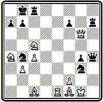
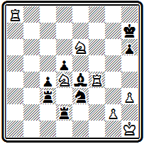
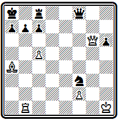

Стамма и его сборник. Дель Рио и моденская группа. Композиторы начала XIX века: Зильбершмидт, Доллингер
Новый этап в развитии заданной композиции связан с творчеством замечательного шахматиста XVIII века Филиппа Стамма. Родом сириец, обосновавшийся в Англии, Стамма в 1737 г. выпустил свою книгу (3), содержавшую 100 окончаний партий. Хотя в дальнейшем он расширил книгу добавлением дебютных позиций, однако наибольшую известность ему доставили именно его эндшпили. Сборник неоднократно переиздавался во Франции, Англии, Голландии, Германии, Австрии и Италии.
Все позиции Стаммы имеют задание: «Белые начинают и выигрывают». Около двух третей заканчиваются матом и по характеру решения являются задачами. По соотношению материала — большое количество фигур при более или менее равных силах у обеих сторон — это типично миттельшпильные позиции. Короли, как правило, находятся на исходных горизонталях, причем белому королю грозит непосредственный мат. Решение форсированное и состоит в разрушении защитного прикрытия короля. По стилю построения позиции Стаммы весьма близки к восточным мансубам.
Позиция №13 показательна для Стаммы -
№13
Ф. Стамма 1737 г
Мат в 8 ходов
Материальное равенство, естественная позиция из середины игры, белому королю грозит мат, король черных надежно укрыт. И все таки жертвой нескольких фигур белые взламывают неприятельскую позицию и дают мат:
1. С:с7+ Л:с7 2. Ф:а7+ Кр:а7 3. Ла1+ Крb8 4. Ла8+ Кр:а8 5. Кb6+ Крb8 6. Лd8+ Лс8 7. Л:с8+ Кра7 8. Ла8#.
По тем же принципам построена задача №14:
№14
Ф. Стамма 1737 г

Мат в 9 ходов
1. Cf4+ Кра8 2. Кb6+ аb 3. Ла1+ Ка6 4. Л:а6+ ba 5. Cg2+ Kpa7 6. Ф:b6+ Кр:b6 7. Kd7+ Kpa7 8. Се3+ Лс5 9. С:с5#.
Здесь жертвы коня, затем ферзя и ладьи имели целью вскрыть линии для форсированного введения в бой новых сил белых.
В рассмотренных примерах черный король не покидал свой лагерь и получал мат после уничтожения окружающих его сил.
В позиции №15 белые добиваются цели путем «извлечения» короля из-за укрытия:
№15
Ф. Стамма 1737 г

Мат в 7 ходов
1. Ле8+ Крb7 2. Фа6+ Кр:а6 3. К:с7+ Кра5 4. b4+ Кра4 5. Cd1+ Фс2+ 6. С:с2+ Кра3 7. Кb5#. Попытка отказаться от принятия жертвы ферзя 2... Крс6 не спасает: 3. Kb4+ Kpd6 4. ФdЗ+ Крс5 5. Фd5#.
Свежую мотивировку жертвы фигуры - для развязывания белой пешки мы находим в примере № 16.
№16
Ф. Стамма 1737 г

Мат в 6 ходов
После 1. Лa7+ Kpg6 2. Лg7+ Kph5 3. Лh4+ Кр:h4 белые отвлекают черного слона с диагонали е4-h1 и развязывают свою пешку: 4. Kf5+ С:f5 (4... Kph5 5. Kf4#) 5. g3+ Kp:h3 6. Kf4#.
В задаче №17 вступительная жертва ладьи тонко обоснована выигрышем темпа.
№17
Ф. Стамма 1737 г

Мат в 4 хода
Сразу играть 1. Кb6+ нельзя из-за 1... Kpd8. Надо предварительно перевести слона на d6, а чтобы сделать это с темпом, жертвуется ладья: 1. Лb8+ Кр:b8 2. С:d6+ Крс8 и теперь уже 3. Кb6+ Kpd8 4. Сс7#.
Позиция № 18 представляет собой редкое исключение среди задач Стаммы - в ней есть тихий ход -
№18
Ф. Стамма 1737 г

Мат в 11 ходов
1. Kd7+ Л:d7 (1... С:d7 2. Фс7+ К:с7 3. bа+ Кра8 4. К:с7#) 2. Фе5+ Ф:е5. Теперь белым мат не грозит и потому — 3. Л:а7 с неизбежным матом на а8: 3... Кс7 4. bc+ Л:с7 5. Ла8# , который черные могут лишь отсрочить, пожертвовав все тяжелые фигуры (3... Ф:g3 4. fg и т. д.).
Сравнивая задачи Стаммы с позициями из с Цивис Бононие, Уайт заключил, что первые представляют собой шаг назад, поскольку место изящных, экономичных позиций с коротким выразительным решением у сирийца снова заступают громоздкие позиции и многоходовые форсированные решения средневековых мансуб. Л. Уайт объяснял это утратой преемственности, тем, что задачи средневековых сборников не были известны Стамме.
При этом, однако, упускается из виду, что задачи на пари, возникнув в противовес реальной шахматной партии, носили искусственный характер. Напротив, творчество Стаммы явилось откликом на потребности обновленной шахматной игры. Все задачи Стаммы — типичные матовые комбинации середины партии, в них наличествуют характерные элементы современных комбинаций. Работы Стаммы не шаг назад, а поворот к реальной шахматной игре от условных задач на пари европейского средневековья. Как древние мансубы возникли в период расцвета восточного шатранджа, так и задачи Стаммы отразили подъем новых европейских шахмат.
Творчество Стаммы явилось плодотворным, но не единственным и даже не главным направлением в развитии композиции. В том же XVIII веке вскоре после Стаммы выступили со своими произведениями три итальянских шахматиста: Эрколе дель Рио, выступавший под псевдонимом «Аноним из Модены», и два его земляка — Джамбатиста Лолли и Доменико Лоренцо Понциани, которые в своих работах существенно отошли от принципов Стаммы. Особенно успешным было творчество дель Рио. Задачи этих трех итальянцев помещены в их книгах о шахматах, выпущенных в середине XVIII века (4—6).
Позиция № 19 необычна для того времени уже по построению: материал сравнительно невелик, угроза мата белому королю отсутствует. Но еще более необычно решение:
№19
Э. дель Рио 1750 г

Мат в 4 хода
1. Фа6! — тихий ход, жертвующий ферзя. Грозит мат на b7. Брать ферзя нельзя 1… ba из-за 2. Сс6#, единственная защита 1... Лb8.
Снова следует тихий ход, жертвующий фигуру: 2. Сс6 с возобновлением угрозы на b7. Опять черным остается лишь усилить оборону этого поля путем 2... Фс8, но теперь следует матовая комбинация: 3. Ф:а7+ Кр:а7 4. Ла1#. Уже в этой задаче отразились основные черты стиля дель Рио: естественность начальной позиции, изящество матовой комбинации, небольшое число ходов решения.
В задаче № 20—
№20
Э. дель Рио 1750 г

Мат в 5 ходов
после двух вступительных ходов с жертвой слона для завлечения короля в матовую сеть -
1. Лf8+ Kpg7 2. Ch6+ Кр:h6 — тихий ход 3. Лg8 создает неотразимую угрозу пожертвования ладьи для блокирования поля: 4. Лh5+ С:h5 5. g6#. Здесь интересен не только сам по себе тихий ход, но и заключающееся в нем тактическое содержание.
В примере № 21 представлена комбинация, вошедшая в литературу под названием «мат дель Рио»:
№21
Э. дель Рио 1750 г

Мат в 3 хода
1. Ке6+ (конь освобождает поле слону) 1... Ф:е6 2. Фh6+. Подобная жертва завлечения и характеризует комбинацию: 2... Кр:h6 3. Cf8#.
Игра в задаче № 22 начинается тихой жертвой ферзя, привлекающей черные ладьи к своему королю:
№22
Э. дель Рио 1750 г

Мат в 5 ходов
1. Фd7 Лg8 2. Kg5 Лbf8 (2... h5 3. Фf5 g6 4. Фf6+) 3. Фh3! h6 4. Ф:h6+ gh 5. Лh7#.
Красивые маневры белых фигур завершаются интересной матовой комбинацией, использующей блокирование поля у черного короля.
Укорочение решения, использование тихих ходов, изящные матовые комбинации, характерные для задач дель Рио, явились значительным шагом по пути к современным принципам задачной композиции. И. Котц указывает, что в этом смысле дель Рио явился предшественником Андерсена, который учился на его задачах. Без работ дель Рио невозможно было бы появление «индийской задачи».
Творчество друзей дель Рио менее самостоятельно и бледнее. В задаче №23 -
№23
Д. Лолли 1763 г

Мат в 7 ходов
белый ферзь совершает сложный обход белой ладьи, чтобы подготовить красивый эполетный мат:
1. Фf6+(Фe7+) Крh6 2. Фh4+ Kpg7 3. Фd4+ Крh6 4. Фf4+ Kpg7 5. Фе5+ Kph6 6. Лh5+ gh 7. Фf6#.
В композиции № 24
№24
Д. Понциани 1769 г

Мат в 7 ходов
финальное матовое положение интересно, но достигается оно, как и в предыдущем примере, форсированным путем:
1. Cd8+ Кра7 2. Л:а6+ bа 3. Фd7+ Крb8 4. Фс7+ Кра8 5. Фс8+ Кра7 6. Сb6+ Кр:b6 7. Фb8#.
Развитие задачной композиции ускоряется с началом XIX века. Выходят сборники задач. Во Франции в самом начале века издается собрание «стратагем», как иногда называли в то время композиции на шахматной доске. На титульном листе автор не обозначен, но впоследствии стало известно, что им является Монтиньи (7). В 1806 г. в Вене выходит сборник Доллингера (8). А в 1814 и новым изданием в 1832 г. выпускает «Задачи для любителей шахмат» Мендгейм (9).
Большинство композиторов начала XIX века следует принципам Стаммы. Опыты дель Рио остаются пока без развития. Последователи Стаммы создают большое количество многоходовых задач с громоздким построением и форсированным решением —задач-монстров, как характеризует их Уайт. Особенно отличаются в этом отношении Зильбершмидт и Доллингер.
Приведем два сравнительно лучших примера из их творчества.
№25
Г. Зильбершмидт
начало ХIХ века

Мат в 6 ходов
В задаче №25 любопытен эполетный мат после 1. Лd6+ ed 2. Л:d6+ cd 3. Фb6+ Лс7 4. Фb8+ Лс8 5. Ф:d6#; несколько длиннее вариант - 4... Kpd7 5. Ca4+ Лс6 6. С:с6#.
В примере № 26 белые жертвуют все тяжелые фигуры и привлекают неприятельского короля на поле f8, где он получает мат от пешки:
№26
И. Доллингер 1806 г.

Мат в 5 ходов
1. Ка6+ Крс8 2. Л:d8+ Кр:d8 3. Л:е8+ Кр:е8 4. Фf8+ Кр:f8 5. g7#.
Некоторой самостоятельностью и оригинальностью отличается творчество немецкого композитора Юлиуса Мендгейма. Из его сборника мы воспроизводим четыре примера.
В проблеме № 27 очень интересен маневр белого ферзя с возвратом по тем же полям, в результате чего уничтожаются черные пешка а2 и ладья а8 и открывается линия для ладьи a1:
№27
Ю. Мендгейм 1832 г.

Мат в 7 ходов
1. Лf8+ Л:f8 2. Фd5+ Лf7 3. Ф:a8+ Лf8 4. Ф:a2+ Лf7 5. Фа8+ Лf8 6. Фd5+ Лf7 7. Ла8#.
Задача № 28 содержит тонкий ход белой ладьей, развязывающий коня:
№28
Ю. Мендгейм 1832 г.

Мат в 6 ходов
1. К:f5+ Крс5 (1... Кре5+ 2. Ке3+) 2. Kd4+ Kpb4 (2... Крb6 3. Лb5#) 3. Лb5+ Кра3 4. Лb3+ Кра2 5. Лb6+! — в этом ходе тонкость задачи, надо развязать белого коня — 5... Кра1 6. Кс2#.
Мендгейм был первым, кто обратил внимание на важность экономичных и чистых матов. Правильные маты, конечно, встречались и раньше. Их можно найти и у авторов восточных мансуб, и у других ранних композиторов. Однако в ту пору они были в значительной мере случайными. Мендгейм же стал их культивировать сознательно. Об этом свидетельствует тот факт, что в его сборнике много задач заканчивается правильными матами.
Примером довольно красивого правильного мата может служить задача № 29:
№29
Ю. Мендгейм 1832 г.

Мат в 5 ходов
1. Ке7+ Крh8 (1... Kpf8 2. Keg6+ hg 3. К:g6+ Kpe8 4. Cf7#) 2. Kg6+ hg 3. К:g6+ Kph7 4. Лh5+ Kp:g6 5. Cf7#.
Комбинация с двумя симметричными правильными матами представлена в примере №30:
№30
Ю. Мендгейм 1832 г.

Мат в 4 хода
1. Се7+ С:а8 2. Лf8+ Kpg7 3. Cf6+! Кр:f8 4. Лh8# и 3... Кр:h6 4. Лh8#.
Из других проблемистов первой трети XIX века следует отметить англичан Льюиса и Уокера, французов Мовийона и Лабурдоне. Последнему, одному из сильнейших шахматистов своего времени, принадлежит, в частности, первое представление темы «эксцельсиор»—марша белой пешки от начальной позиции до поля превращения (см. № 000).